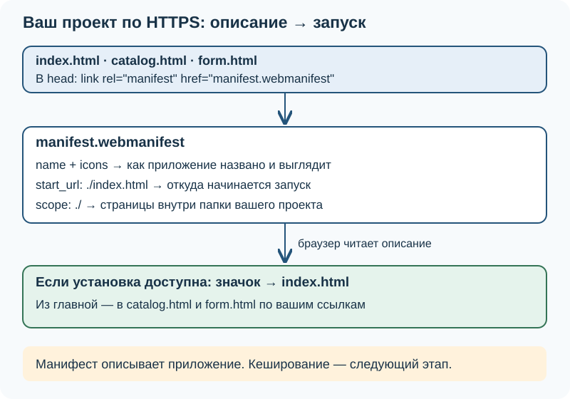

Подключение проекта к GitHub, публикация сайта и первые шаги PWA
На предыдущей паре вы установили Git при необходимости и сохранили версии своего VariantNN-web на компьютере. Теперь подключим эту же папку с её историей к GitHub. Затем разместим сайт средствами GitHub Pages и подготовим манифест PWA.
Первый результат: проект появился в вашем репозитории на GitHub; вы сделали ещё один коммит и проверили его отправку. Продолжение: включили GitHub Pages, открыли сайт по HTTPS и добавили описание PWA. Выполняйте этапы по порядку. Если регистрация или установка заняла много времени, сначала завершите отправку проекта; размещение и PWA продолжите с последнего проверенного шага.
Обе пары проходят за компьютерами: после короткого показа повторяйте действие на своём проекте.
1. Различайте три названия
| Название | Что это и зачем нужно сейчас |
|---|---|
| Git | Программа для истории файлов; коммиты уже есть в вашей локальной папке |
| GitHub | Сервис, где будет удалённая копия репозитория с файлами и коммитами |
| GitHub Desktop | Программа с кнопками для входа в GitHub, отправки коммитов и просмотра истории |
GitHub Desktop работает с тем же Git-репозиторием, который вы создали командами. Второй git init и новый проект не нужны. Для первого подключения используем Desktop, чтобы пройти вход через браузер и увидеть отправку. Команды первой пары при этом сохраняют смысл.
2. Проверьте вход в GitHub
Откройте GitHub в браузере.
- Если у вас есть аккаунт, нажмите Sign in и войдите в него.
- Если аккаунта ещё нет, выберите Sign up, следуйте регистрации и подтвердите почту, когда сервис этого потребует. Сохраните свой логин и способ восстановления доступа.
- Откройте меню своего профиля и проверьте логин: на общем компьютере может быть открыт чужой аккаунт.
Пароль и коды подтверждения вводите самостоятельно, не в файл проекта и не в общий чат. Если нет доступа к почте, аккаунту или сервису, отметьте, на каком шаге остановились, и продолжайте локальную работу из первой пары. Аккаунт преподавателя не используется вместо личных аккаунтов всей группы.
3. Установите GitHub Desktop и подключите аккаунт
Если программа уже установлена, откройте её через меню «Пуск». Иначе скачайте установщик с официальной страницы GitHub Desktop, откройте загруженный файл и дождитесь запуска. На учебном компьютере установка выполняется при разрешении преподавателя и наличии прав; блокировку установки не обходите.
В программе выберите Sign in to GitHub.com. Если начального окна нет: File → Options → Accounts → Sign in. Затем выберите продолжение через браузер (Continue with browser), завершите вход и разрешите возврат в GitHub Desktop. Проверьте, что программа подключена к вашему логину. Названия пунктов могут немного отличаться.
Если появляется настройка автора коммитов, используйте своё согласованное учебное имя и адрес. Для связи новых коммитов с аккаунтом подходит адрес из настроек почты GitHub, включая предложенный сервисом адрес noreply. Имя автора коммита и вход в аккаунт — отдельные настройки: введённое в Git имя не выполняет вход.
Проверка: вы видите свой аккаунт в разделе Accounts, а не только открытую страницу GitHub в браузере. Вход в браузере сам по себе ещё не подтверждает подключение Desktop.
4. Добавьте существующую папку
- В Desktop выберите File → Add local repository.
- Через Choose укажите свою прежнюю папку
VariantNN-web, в которой на первой паре выполнялиgit init. - Нажмите Add repository. Вверху проверьте Current repository, затем откройте History.
- Найдите свои коммиты первой пары. Сопоставьте сообщение одного из них с выводом
git log --onelineв Git Bash.
Если программа сообщает, что папка не является Git-репозиторием, проверьте путь и результат первой пары. Не выбирайте создание нового репозитория в другой папке ради исчезновения сообщения. Если в History чужие коммиты, выбран не тот проект — сначала исправьте выбор папки.
Проверка: в Desktop видны именно ваши файлы и ваша история. Пока это только добавление папки в программу на компьютере; отправки в GitHub ещё не было.
5. Отправьте репозиторий на GitHub
Перед первой отправкой откройте History и просмотрите состав коммитов: в них должны быть только файлы вашего учебного приложения с условными данными. Секреты и личные документы не должны встречаться и в старых коммитах. Если обнаружили их, остановитесь и разберите ситуацию с преподавателем: удаление строки из последней версии не удаляет её из истории.
Для проекта, который ещё не подключён к удалённому репозиторию:
- Нажмите Publish repository в верхней части Desktop.
- Проверьте название, например
Variant12-webдля своей папки. Номер подставьте собственный. - Для первого подключения оставьте Keep this code private включённым: репозиторий будет приватным. Выбор публичного доступа для размещения сайта рассмотрим отдельно.
- В качестве владельца используйте свой аккаунт, без чужой организации.
- Нажмите Publish repository и дождитесь окончания отправки.
- Выберите Repository → View on GitHub. В браузере проверьте владельца, название, файлы и список коммитов.
Предварительно создавать второй пустой репозиторий на сайте для этого маршрута не нужно: Desktop создаёт его при Publish. Если имя уже занято, проверьте, не ваш ли проект там уже лежит; не создавайте бесконечные копии с новыми названиями.
Если вместо Publish видите Fetch origin или Push origin, связь уже существует. Проверьте Repository → Repository settings → Remote и открываемую страницу GitHub. Если это ваш репозиторий и история совпадает, используйте существующую связь. Не удаляйте и не заменяйте неизвестный адрес наугад.
6. Выполните цикл «изменить → коммит → отправить»
Измените в редакторе одну полезную подпись своего приложения, например уточните назначение каталога. Сохраните HTML и откройте страницу привычным способом, чтобы проверить текст.
- Вернитесь в Desktop. В Changes появился изменённый файл; щёлкните по нему и прочитайте различия.
- Проверьте галочки файлов: выберите только свою текущую правку.
- В поле Summary введите понятное сообщение, например «Уточнено описание каталога».
- Нажмите Commit to …. После
toстоит имя текущей ветки, напримерmainилиmaster; переименовывать её сейчас не требуется. - Откройте History и найдите новый коммит. На GitHub он ещё может отсутствовать: коммит пока локальный.
- Нажмите Push origin и дождитесь завершения отправки. Обновите страницу репозитория в браузере и найдите то же сообщение и изменённый текст файла.
origin — принятое короткое имя удалённого репозитория. Fetch origin проверяет новые сведения с GitHub, Push origin отправляет ваши сохранённые коммиты. Не ищите кнопку Push, пока сделали только правку файла без коммита.
Если программа требует получить чужие изменения или показывает конфликт, остановитесь и покажите сообщение преподавателю. На этом этапе не решаем конфликт принудительной отправкой или сбросом.
Минимум второй пары выполнен, когда вы показали одинаковый последний коммит в Desktop и на GitHub и объяснили разницу между сохранением файла, коммитом и отправкой. После этого переходите к размещению.
7. Включите готовое размещение GitHub Pages
GitHub Pages отдаёт браузеру ваши HTML, CSS, JavaScript и изображения. Это подходит для нашего приложения с каталогом и формой на JavaScript. Серверная обработка заявок, общая база и аккаунты пользователей от включения Pages не появляются.
- Откройте свой репозиторий в браузере. Убедитесь, что
index.htmlлежит в корне рядом сcatalog.html,form.htmlиstyle.css, а не внутри ещё одной папкиVariantNN-web. - Откройте Settings → Pages. Если используемый тариф не даёт Pages для приватного репозитория, сначала покажите состав работы преподавателю. При разрешении можно сделать собственный учебный репозиторий публичным через Settings → General → Danger Zone → Change repository visibility. Это открывает файлы и историю всем посетителям. Личные репозитории ради упражнения открывать не нужно; если публикация не разрешена, оставьте их приватными и продолжайте подготовку PWA локально.
- В Pages выберите источник Deploy from a branch, свою фактическую ветку и папку / (root). Сохраните выбор.
- Дождитесь успешного размещения. При необходимости проверьте его состояние во вкладке Actions. Откройте выданный Pages адрес сайта; не используйте вместо него адрес списка исходников.
- Проверьте главную страницу, переход в каталог и форму, изображения и JavaScript. Сохраните ссылку и откройте её на телефоне при его наличии.
Пример адреса сайта — https://YOUR-LOGIN.github.io/VariantNN-web/. Это шаблон: подставлять его вручную не требуется, скопируйте фактический адрес из Pages. HTTPS здесь обеспечивает готовый сервис. Свой домен и сертификат для занятия не нужны.
Поскольку приложение находится в папке /VariantNN-web/, сохраняйте относительные пути: style.css, catalog.html, images/photo.png. Путь /style.css с первым слешем ищет файл в корне домена и может сломаться. Имя Photo.png должно совпадать с регистром файла. При 404 сначала проверьте путь и наличие файла на GitHub, а не меняйте сетевые настройки компьютера.
8. Продолжение: описание и установка PWA
Когда сайт открывается, добавьте манифест и значки по следующим шагам. Это продолжение работы с тем же приложением. Если подключение GitHub пока не завершено, разберите эти файлы на показе и подготовьте их локально; установку по HTTPS отметьте как ещё не проверенную.
Манифест описывает приложение браузеру
Манифест — JSON-файл с описанием веб-приложения. Он сообщает название, начальный адрес, область действия, режим окна и значки. HTML отвечает за содержимое страниц; манифест — за сведения, которые браузер использует при представлении и установке приложения.

Создайте рядом с index.html файл manifest.webmanifest:
{
"id": "./",
"name": "Название вашего приложения",
"short_name": "Короткое имя",
"lang": "ru",
"start_url": "./index.html",
"scope": "./",
"display": "standalone",
"background_color": "#ffffff",
"theme_color": "#24547a",
"icons": [
{
"src": "images/icon-192.png",
"sizes": "192x192",
"type": "image/png"
},
{
"src": "images/icon-512.png",
"sizes": "512x512",
"type": "image/png"
}
]
}
Замените названия и основной цвет на свои. Пути значков заработают после создания самих PNG в следующем разделе. В JSON нужны двойные кавычки; комментарии и запятая после последнего элемента недопустимы.
| Поле | Как связано с вашим проектом |
|---|---|
id |
Задаёт идентификатор приложения; здесь он привязан к папке проекта. После установки без причины его не меняют |
name, short_name |
Полное и короткое название вашего приложения, а не название учебной папки |
start_url |
Страница, с которой начинается запуск установленного приложения |
scope |
Путь, внутри которого находятся страницы приложения; здесь в него входят главная, каталог и форма |
display |
standalone просит отдельное окно без обычной панели вкладки; фактическое поведение определяет браузер |
background_color, theme_color |
Цвет фона при запуске и цвет оформления оболочки; они не заменяют правила CSS |
icons |
Адреса изображений, их реальные размеры и тип |
Относительные пути start_url, scope и icons.src в этом примере вычисляются от адреса манифеста. Он лежит в корне нашего проекта, поэтому ./ сохраняет папку /VariantNN-web/. Если перенести манифест в другую папку, эти пути придётся проверить заново.
В <head> каждой из трёх страниц добавьте:
<link rel="manifest" href="manifest.webmanifest">
<meta name="theme-color" content="#24547a">
Существующие charset, viewport, title и подключение CSS сохраните. Если такие строки уже есть, исправьте их вместо добавления дублей. В content используйте свой цвет из манифеста.
Проверьте понимание: что нужно изменить, если после установки должно открываться сразу содержимое каталога? Что нужно сохранить, чтобы переход в форму оставался внутри области приложения?
Два настоящих значка
В графическом редакторе создайте простой квадратный значок своего приложения. Используйте крупный узнаваемый знак и запас места по краям: мелкий текст на экране телефона не читается.
Экспортируйте две PNG-копии в существующую папку images своего проекта:
VariantNN-web/
index.html
catalog.html
form.html
manifest.webmanifest
images/
icon-192.png ← 192 × 192 пикселя
icon-512.png ← 512 × 512 пикселей
Остальные CSS, JavaScript и изображения остаются на месте; дерево показывает только файлы этого шага. Размеры проверьте в свойствах или редакторе. Переименование JPEG в .png не преобразует формат, а запись 512x512 в JSON не увеличивает изображение.
Для первого опыта используем обычные значки. Не объявляйте изображение maskable, пока не подготовили его с учётом обрезки и не проверили безопасную область.
Убедитесь, что браузер получил нужные файлы
Сохраните изменения. В Desktop проверьте Changes: три изменённых HTML, новый manifest.webmanifest и оба PNG. Выберите эти файлы, напишите сообщение Добавлен манифест и значки приложения, сделайте коммит и нажмите Push origin. Дождитесь обновления размещения. Это тот же цикл, который вы уже выполнили с одной подписью.
На компьютере откройте опубликованный сайт и средства разработчика:
- В Network / Сеть обновите страницу и найдите запрос
manifest.webmanifest. Он должен возвращать JSON, а не страницу ошибки или HTML главной. - Проверьте оба адреса значков. Откройте их отдельно: нужны изображения с правильными размерами, без ответа 404.
- Если браузер предоставляет раздел Application / Приложение → Manifest / Манифест, проверьте распознанные название, начальный адрес и значки. Ошибку читайте целиком: она указывает, какое поле или ресурс нужно проверить.
- Откройте каталог и форму по HTTPS. Ввод, поиск и сообщение формы должны работать так же, как до добавления манифеста.
| Наблюдение | Что проверить первым |
|---|---|
| Главная работает, CSS и картинки пропали | Относительные пути, начальный слеш, регистр и наличие файлов в отправленном коммите |
| В манифесте ошибка JSON | Двойные кавычки, запятые и отсутствие комментариев |
| Значок не загрузился | Файл PNG, точное имя, размер и путь от манифеста |
| Запуск ведёт не в ваш проект | start_url, scope, положение манифеста и папку в HTTPS-адресе |
| Изменения есть в GitHub, на сайте прежний текст | Статус последнего размещения, адрес сайта и повторную загрузку страницы |
| Поиск забыл запрос после перехода с локального адреса | Изменение происхождения и работу сохранения уже на новом адресе |
Проверка установки на телефоне
Откройте HTTPS-адрес в обычном браузере телефона. Встроенное окно мессенджера может не предоставлять команду установки: откройте ссылку во внешнем браузере.
В меню браузера найдите доступное действие установки приложения или добавления на главный экран. На разных системах названия, условия и результат отличаются: это может быть установленное веб-приложение либо ярлык страницы. Само появление значка ещё не подтверждает все свойства PWA.
После доступного действия проверьте:
- какое название и изображение появились;
- с какой страницы начинается запуск;
- как выглядит окно и доступны ли каталог и форма;
- работает ли поиск и восстановление запроса после повторного открытия на этом устройстве.
Если команды нет, сначала проверьте HTTPS, чтение манифеста, значки и ошибки браузера. Затем запишите систему, браузер и наблюдение для разбора с преподавателем. Не обещайте одинаковую кнопку установки на всех устройствах.
9. Что показать и как понять ошибку
Подготовьте свой проект и последовательно покажите достигнутый результат:
| Этап | Проверяемое свидетельство |
|---|---|
| Подключение | Desktop открыл прежнюю папку и показывает коммиты первой пары |
| Отправка | В браузере на GitHub есть ваш последний коммит и исправленный файл |
| Размещение | По адресу из Pages открывается приложение, работают три страницы |
| PWA | Браузер читает манифест и значки; способ установки проверен на доступном устройстве |
Не отмечайте последующий этап выполненным только потому, что предыдущий завершён. Если нет телефона, подтвердите чтение манифеста на компьютере, а телефонную установку оставьте непроверенной. Отдельный письменный отчёт или печатная памятка не нужны.
| Ситуация | Следующее действие |
|---|---|
| Desktop не видит репозиторий | Сверить путь с папкой, где есть история первой пары |
| Не получается войти | Проверить свой аккаунт и доступ к подтверждению в браузере; записать точное сообщение |
| В Changes есть файл, Push нет | Сначала проверить различия и создать локальный коммит |
| На GitHub осталась старая версия | Проверить Push origin, ветку и владельца открытого репозитория |
| Publish недоступна, видна Fetch origin | Проверить существующую связь и страницу своего репозитория |
| Pages недоступна | Проверить разрешённые возможности для видимости и тарифа; GitHub-часть можно завершить без сайта |
| Pages показывает 404 | Проверить завершение размещения, ветку, корневой index.html и точный адрес |
| Пропали CSS или картинки | Проверить относительные пути, регистр и отправленные файлы |
| Не появляется установка | Проверить HTTPS, манифест и значки; записать браузер и фактическое наблюдение |
Вопросы для самопроверки:
- Почему GitHub Desktop может показать новый коммит, а страница GitHub — ещё нет?
- Что отличается у адреса репозитория и адреса сайта Pages?
- Где в выполненной работе вы настраивали собственный сервер? Кто на самом деле выдаёт HTTPS-адрес?
- Какие файлы описывают внешний вид страницы, а какие — название и значок приложения?
- Почему установка значка ещё не доказывает работу без сети?